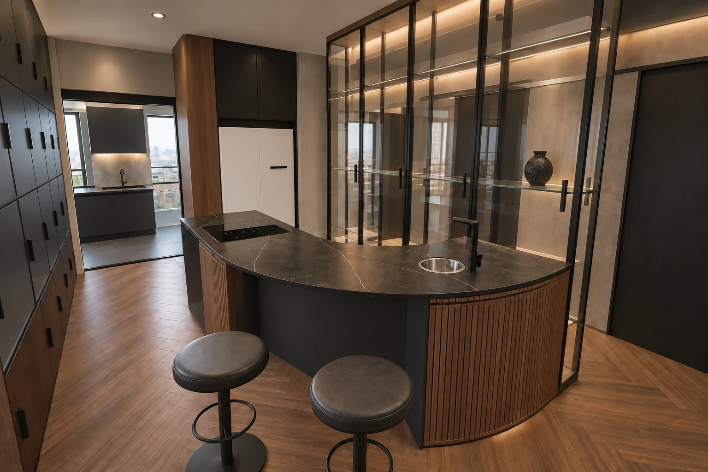
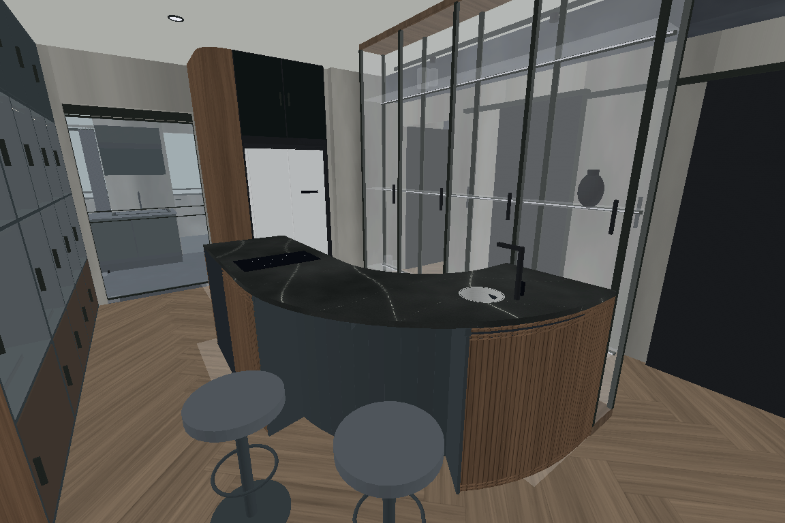
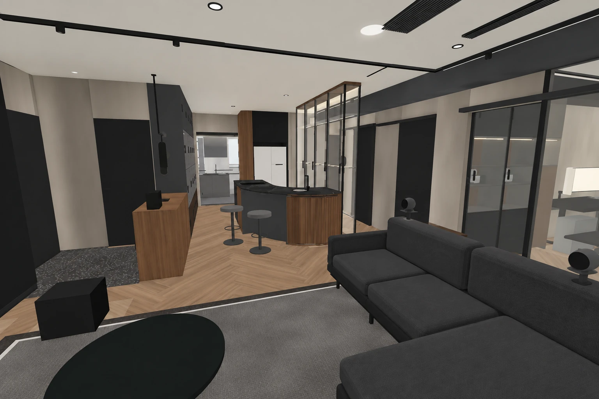
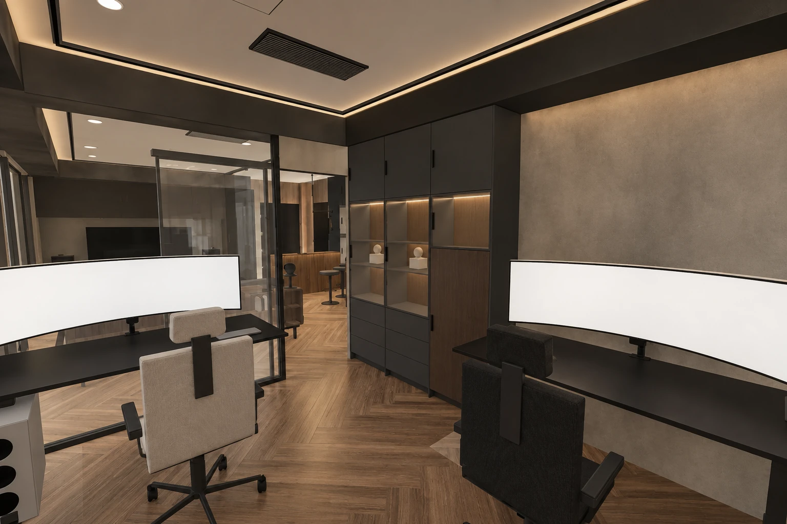
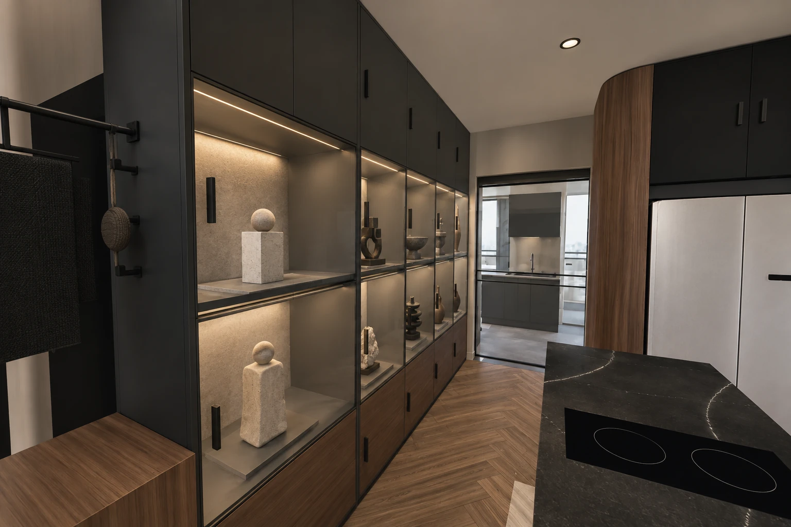
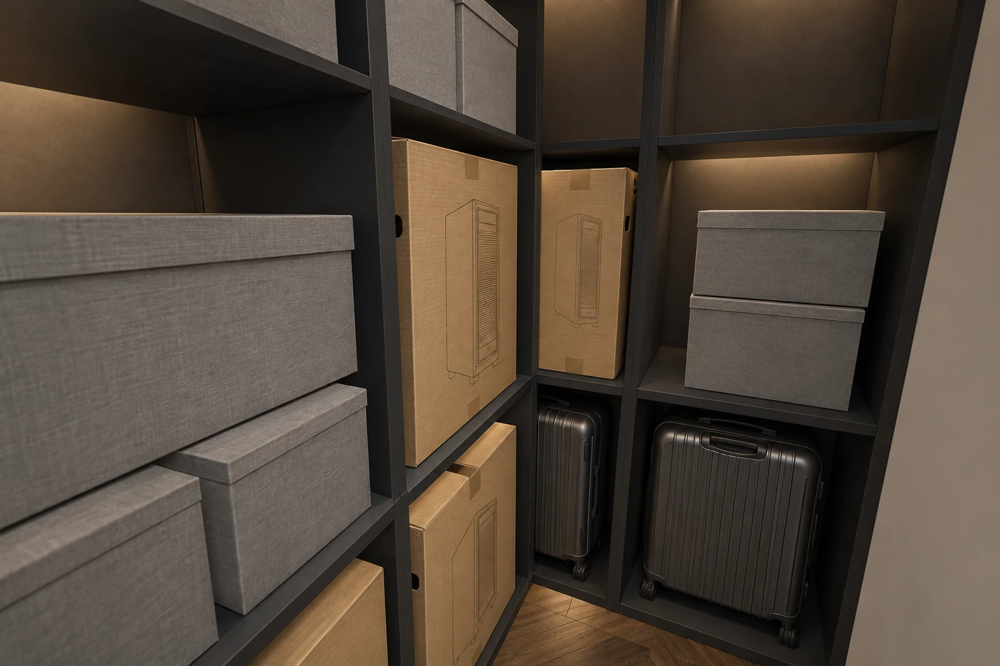
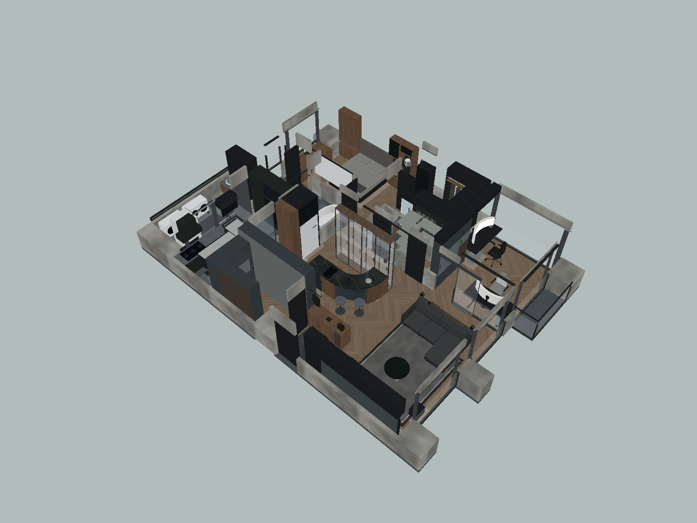
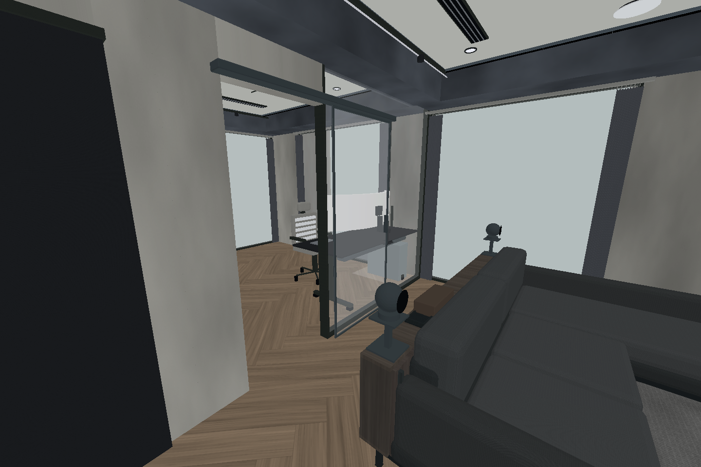

高玻璃櫃保留，兩席移到外弧。
依業主補充示意調整：取消內側餐翼，兩張圓凳沿中島外側弧線排列。其餘全室配置延續 R04，並修正客廳通往雙人書房的喇叭及門片干涉。

查看同視角實際模型底圖

這次採用的調整
| 空間 | 配置與使用結果 | 需要深化 |
|---|---|---|
| 中島 | 原高玻璃櫃、曲線檯面與設備位置保留；外弧兩席、內縮留膝。保留展示容量，也保留中央垂直分隔。 | 檯面懸臂、背板與設備維修。座位背側以起身、取物為主；玄關櫃取物與用餐錯開。 |
| 客廳／書房入口 | 兩支後環繞落地架撤除，改沙發背架承托小型完整音箱；原門洞改外側滑門，固定玻璃不移。 | 音箱機種、試聽、隔振與背架固定；門軌承重、止擺、緩衝、隔音與公差。 |
| 展示與備藏 | 展示牆五列×兩層，供十座大型公仔試排；上下封閉備品，整段同深、收藏室背面平整。內部開放層架收大箱與包盒。 | 大型公仔寬深高與重量、箱子套疊後外徑；門框銜接沒有額外餘量，不能直接下料。 |
| 雙人書房 | 兩張獨立桌保留；九抽改六抽＋低位常用櫃，上部封閉歸檔，桌下補理線。 | 椅背後仰、升降線長、抽屜五金與兩人同時使用。 |
| 其他空間 | 主臥暖灰軟包、客廳低反射背牆、玄關鞋格關門、更衣高位換季盒、衛浴鏡側光及家務工作光。 | 已下單廚具依訂單複核；濕區配線及燈具由現場專業人員確認。 |
客廳、書房與收納




模型檢核的範圍
以下均為模型值，單位公分；不是現場淨尺寸，也不是通行標準或人體工學認證。
| 檢查 | 基準／結果 |
|---|---|
| 中島兩席 | 座面直徑40，地坪至座面頂65，地坪至檯面頂95；外弧邊緣向檯下背板內縮25。兩張圓凳沿各自外向方向拉20的完整行程未碰模型固定物。 |
| 留膝測試 | 每席40寬、32深、高度63～81的測試包絡未碰櫃體或設備。不能據此推定所有體型或完整起身動作都合適。 |
| 書房接近區 | 既有固定玻璃客廳側 y375 至沙發背架 y472＝97；滑門拉手最大 y385 至背架＝87。門洞 x788 至872＝84，內櫃面 x792.2 至門洞右界＝79.8。 |
| 滑門／通行 | 滑門完整94行程未碰固定玻璃或家具；全開時指定進書房路線的直徑60圓形包絡通過。櫃門關閉，不含搬運、會車或無障礙驗證。 |
| 版本一致 | V0／V2／V3／V4 全部網格與變換比對相同。V1 更新30個受影響視角，8個未變視角沿用；五版仍為190個圖位。 |
查看全室模型鳥瞰與入口模型

